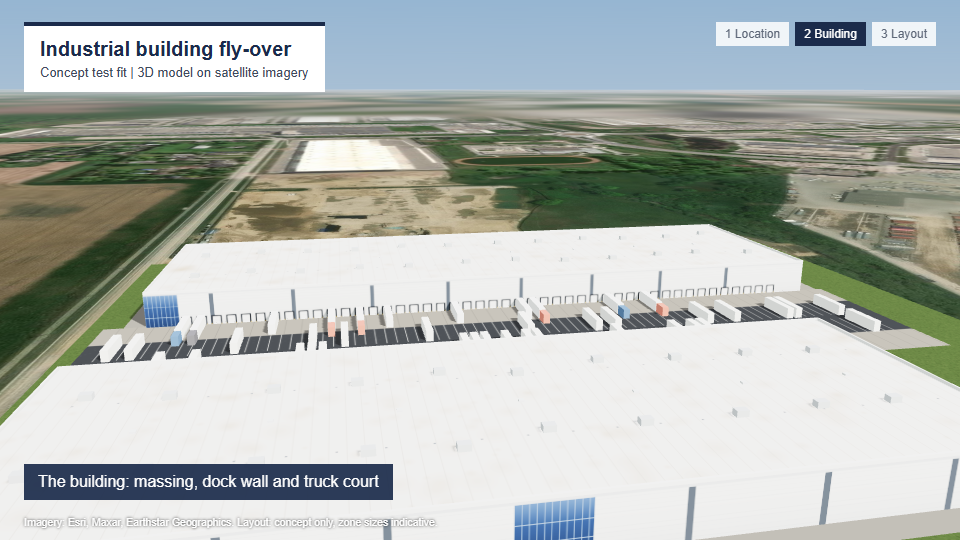
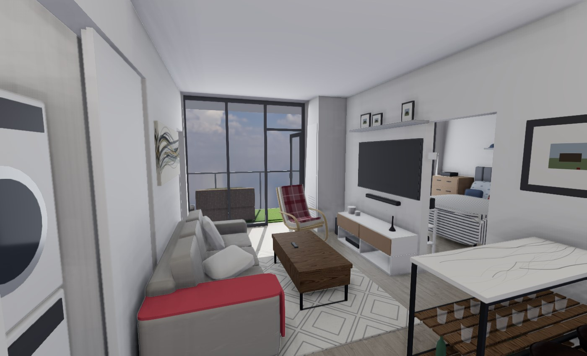
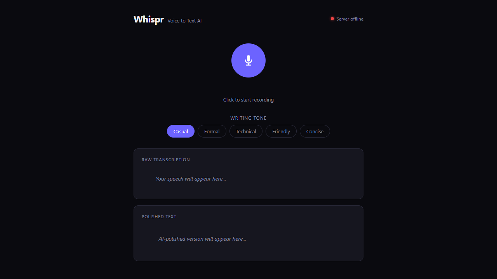

Projects
The problem, how the tool works and what it produced. Client names, addresses and figures are removed, and demo data is fictional.

LeaseIQ: AI lease abstraction
Upload a commercial lease PDF and get a structured abstract. Every field carries a confidence score, a page number and a quoted citation, and a reviewer signs off before the client sees it.

Rental property portfolio dashboard
A single-page dashboard for a small rental portfolio: value, equity, cash flow and returns per property, with every figure labelled as actual, modelled or estimated.

Industrial site 3D fly-over
An animated 3D fly-over of an industrial building, built on satellite imagery in the browser. It moves from regional context to the building, then lifts the roof to show a concept layout.

Daily commercial real estate brief
An agent-run end-of-day news brief for a capital markets seat. Trade press is used for discovery, primary documents for confirmation, and every item is dated before it can be published.

Bank statement to budget workbook
A Python pipeline that parses bank statement PDFs, reconciles each one to the bank's printed totals, classifies transactions with a rule engine and rebuilds an Excel cash flow workbook.

Floor plan to 3D walkthrough
A furnished, walkable 3D model of a 710 sq ft condo, generated from a 2D builder floor plan and rendered in the browser with three.js.

Local voice dictation with tone rewrite
A small dictation app that transcribes speech with a local Whisper model and rewrites it in a chosen tone with a local LLM. No cloud calls and no API keys.